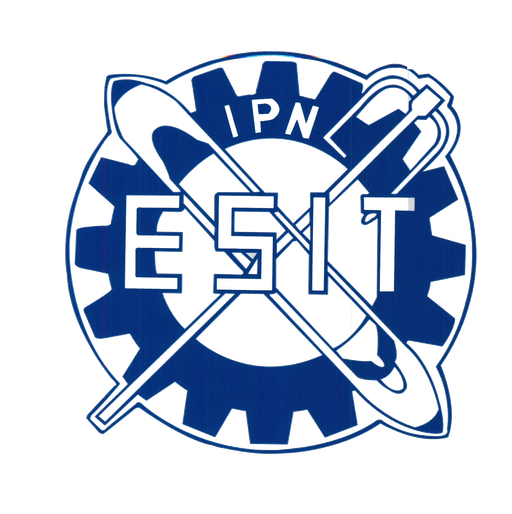

Logística y cadena de suministro
Bienvenida
TextilSupply: innovación y logística inteligente, (polilibro académico), ha sido creado para fomentar la curiosidad, estimular el pensamiento lógico y fortalecer la capacidad de análisis en el fascinante mundo del textil. Este recurso nace como una herramienta educativa dinámica e innovadora en donde los estudiantados desarrollan habilidades fundamentales para comprender la logística y cadenas de suministro con un alto sentido social.
Durante esta experiencia de aprendizaje, descubrirás los fundamentos logísticos y cadenas de suministro, comprenderás la importancia del almacenamiento, la administración de inventarios, los sistemas de codificación y las tecnologías de empaque. Asimismo, visualizarás estrategias distribución, medios de transporte, régimen aduanero y comercio internacional, reconociendo cómo cada elemento contribuye la eficiencia y a la competencia en la industria textil.
Cada apartado ha sido elaborado con un enfoque pedagógico que prioriza la comprensión profunda, la aplicación práctica y la reflexión crítica. A través de recursos interactivos, ejemplos, retos y actividades, este polilibro te invita a explorar, experimentar y construir tu propio conocimiento, fortaleciendo tus competencias en pensamiento analítico, crítico, solución de problemas, adoptar una decisión, innovación tecnológica y aprendizaje autónomo
Más que un simple material de estudio, TextilSupply: innovación y logística inteligent, te invita a participar en este maravilloso mundo de las cadenas de suministro, donde el conocimiento, en donde tu participación y creatividad con el uso de las tecnologías que integren la transformación y los desafíos de la industria textil en oportunidades de innovación.
¡Bienvenido a TextilSupply, este es tú espacio de aprendizaje donde la tecnología, la creatividad y la innovación te ayudaran a reflexionar, analizar e integran nuevas ideas y transformar el futuro de la industria textil!